2020年普通高等学校招生全国统一考试
理科综合能力测试 化学
注意事项：
1.答卷前，考生务必将自己的姓名、准考证号填写在答题卡上。
2.回答选择题时，选出每小题答案后，用铅笔把答题卡上对应题目的答案标号涂黑，如需改动，用橡皮擦干净后，再选涂其它答案标号。回答非选择题时，将答案写在答题卡上，写在本试卷上无效。
3.考试结束后，将本试卷和答题卡一并交回。
可能用到的相对原子质量：H 1 C 12 N 14 O 16 Na 23 Al 27 P 31 S 32 Cl 35.5 V 51 Fe 56
相关题目：第 7 题 · 第 8 题 · 第 9 题 · 第 10 题 · 第 11 题 · 第 12 题 · 第 13 题 · 第 26 题 · 第 27 题 · 第 28 题 · 第 35 题 · 第 36 题
一、选择题：本题共13个小题，每小题6分。共78分，在每小题给出的四个选项中，只有一项是符合题目要求的。
本册收录其中的化学第7—13题。
相关题目：第 7 题 · 第 8 题 · 第 9 题 · 第 10 题 · 第 11 题 · 第 12 题 · 第 13 题
返回原卷说明与相对原子质量 返回选择题说明
题目与已知条件
国家卫健委公布的新型冠状病毒肺炎诊疗方案指出，乙醚、75%乙醇、含氯消毒剂、过氧乙酸(CH3COOOH)、氯仿等均可有效灭活病毒。对于上述化学药品，下列说法错误的是
A. CH3CH2OH能与水互溶
B. NaClO通过氧化灭活病毒
C. 过氧乙酸相对分子质量为76
D. 氯仿的化学名称是四氯化碳
所用高中知识
乙醇氢键、含氯氧化剂、相对分子质量和俗名。
读题与思路
氯仿为CHCl₃，名称三氯甲烷，四氯化碳是CCl₄，因此D错误。乙醇有亲水羟基而与水互溶；次氯酸盐靠氧化；过氧乙酸C₂H₄O₃相对分子质量24+4+48=76。
分步解析
- 乙醇含羟基，可与水形成氢键，能与水互溶，A成立。
- NaClO中氯为+1价，具有氧化性，消毒作用与其氧化作用有关，B成立。
- CH3COOOH=C2H4O3，相对分子质量2×12+4×1+3×16=76，C成立。
- 氯仿为CHCl3，化学名三氯甲烷；CCl4才是四氯化碳，因此D错误。
检查与易错点
题目考查化学知识，不意味着可自行混用消毒剂。尤其含氯消毒剂不可与酸或其他清洁剂随意混用；不要用“新生态氧”解释其消毒原理。
本题来源：paper2020 · doc-paper
返回原卷说明与相对原子质量 返回选择题说明
题目与已知条件
紫花前胡醇
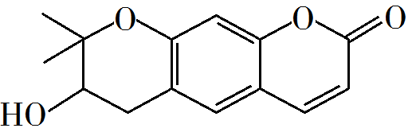
可从中药材当归和白芷中提取得到，能提高人体免疫力。有关该化合物，下列叙述错误的是（ ）
A. 分子式为C14H14O4
B. 不能使酸性重铬酸钾溶液变色
C. 能够发生水解反应
D. 能够发生消去反应生成碳碳双键
查看原题图／原始配图
读题与思路
按键线逐点计14C、4O，再按价键补14H，A对。分子有可氧化醇羟基及碳碳双键，能使酸性重铬酸钾变色，所以B错误。右侧内酯可水解；羟基邻位有H，可消去形成C=C。
分步解析
- 按键线式顶点、端点统计有14个C、4个O；逐碳补足四价得14个H，分子式C14H14O4，A成立。
- 分子含可氧化的醇羟基，其连羟基的碳上有H，酸性重铬酸钾能将该醇氧化并自身还原变色，B“不能”错误。
- 环内含—C(=O)—O—酯键，可水解开环，C成立。羟基邻位碳含H，满足醇消去水生成C=C的结构条件，D成立。
检查与易错点
氧化性判断有明确的醇结构依据，不必对所有孤立C=C的重铬酸钾氧化作过宽泛断言；环中醚键不可误认酯键。
本题来源：paper2020 · doc-paper
返回原卷说明与相对原子质量 返回选择题说明
题目与已知条件
下列气体去除杂质的方法中，不能实现目的的是（ ）
|
气体(杂质) |
方法 |
| A |
SO2(H2S) |
通过酸性高锰酸钾溶液 |
| B |
Cl2(HCl) |
通过饱和的食盐水 |
| C |
N2(O2) |
通过灼热的铜丝网 |
| D |
NO(NO2) |
通过氢氧化钠溶液 |
A. A B. B C. C D. D
查看原题图／原始配图
读题与思路
SO₂与H₂S都有还原性，都会被酸性KMnO₄消耗，A不能选择性除杂。饱和食盐水降低Cl₂溶解并吸收HCl；铜丝高温耗O₂而保留N₂；少量NO₂被NaOH吸收，符合其余流程目的。
分步解析
- A中H2S与SO2均有还原性，都会消耗酸性KMnO4，主体SO2也被除去，目的不能实现。
- HCl极易被饱和食盐水吸收，高Cl−浓度抑制氯气溶解后的平衡反应并降低损失，B可用。
- 灼热铜消耗O2：2Cu+O2→2CuO；N2不反应，C可用。NO2可被NaOH溶液吸收，主体为过量NO时，除去NO2后仍可得到NO，D可用。
检查与易错点
“能和杂质反应”只是必要条件；若也消耗主体气体，仍是错误方案。饱和盐水不是完全不溶氯气，宜表述为减少损失。
严格地说，NO与NO₂共存时也可共同被碱吸收：NO+NO₂+2OH⁻→2NO₂⁻+H₂O，所以D不保证NO完全无损失。A的区别在于即使H₂S已除尽，主体SO₂仍继续被氧化吸收。
本题来源：paper2020 · doc-paper
返回原卷说明与相对原子质量 返回选择题说明
题目与已知条件
铑的配合物离子[Rh(CO)₂I₂]⁻可催化甲醇羰基化，反应过程如图所示。
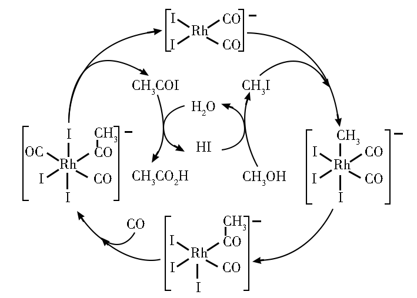
下列叙述错误的是
A．CH₃COI是反应中间体
B．甲醇羰基化反应为CH₃OH+CO=CH₃CO₂H
C．反应过程中Rh的成键数目保持不变
D．存在反应CH₃OH+HI=CH₃I+H₂O
查看原题图／原始配图
原始配图 1
所用高中知识
催化剂循环再生、中间体与总反应、配位数变化。
读题与思路
循环中顶端Rh连接4个配体原子，右侧氧化加成后连接数增加，故C错误。把循环各步相加、消去CH₃I、HI、CH₃COI等中间体，净式为CH₃OH+CO→CH₃COOH；D正是右侧生成CH₃I的步骤。
分步解析
- CH3COI在一个步骤生成、下一个步骤被水解消耗，是中间体，A成立。
- CH3OH与HI生成CH3I和H2O，D可由内圈转化读出。后续CH3COI水解生成CH3COOH并再生HI。
- 消去循环物种，净变化为CH3OH+CO→CH3COOH，B成立；C、H、O计数分别2、4、2守恒。
- Rh起始与两个CO、两个I连接，共4个配位连接；后续结合CH3和I等后出现6个连接，迁移和解离时继续改变，因此成键数目并不恒定，C错误。
检查与易错点
催化剂最终再生，不表示催化过程中结构始终不变；中间体不能列入净反应两端而遗漏消去。
本题来源：paper2020 · doc-paper
返回原卷说明与相对原子质量 返回选择题说明
题目与已知条件
1934年约里奥–居里夫妇在核反应中用α粒子（即氦核）轰击金属原子，得到核素，开创了人造放射性核素的先河：。其中元素X、Y的最外层电子数之和为8。下列叙述正确的是（ ）
A. 的相对原子质量为26
B. X、Y均可形成三氯化物
C. X的原子半径小于Y的
D. Y仅有一种含氧酸
查看原题图／原始配图
所用高中知识
核电荷数、质量数守恒；主族电子数和周期律。
读题与思路
核反应质量数守恒w+4=30+1得w=27；原子序数相差2，最外层数和8，锁定Al/P。AlCl₃、PCl₃都存在，B成立；Al半径大于P，P有多种含氧酸，质量数27也不能写26。
分步解析
- 核反应为WZX+42He→30Z+2Y+10n。质量数守恒W+4=30+1，W=27，A给26错误。
- X为金属，Y比X原子序数大2，最外层电子数和为8，可得X=Al（3个价电子）、Y=P（5个价电子）。对应核反应2713Al+42He→3015P+10n。
- AlCl3与PCl3均存在，B正确。同周期原子半径Al大于P，C错误。磷至少有H3PO4和H3PO3等含氧酸，D错误。
检查与易错点
核素质量数不能称作该元素天然同位素平均的相对原子质量。源PDF的核素上标错显，完整反应在步骤中已重排。
本题来源：paper2020 · doc-paper
返回原卷说明与相对原子质量 返回选择题说明
题目与已知条件
科学家近年发明了一种新型Zn−CO2水介质电池。电池示意图如图，电极为金属锌和选择性催化材料，放电时，温室气体CO2被转化为储氢物质甲酸等，为解决环境和能源问题提供了一种新途径。
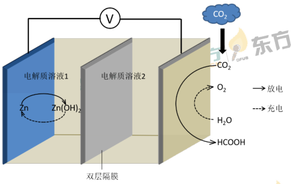
下列说法错误的是（ ）
A. 放电时，负极反应为Zn−2e⁻+4OH⁻=Zn(OH)₄²⁻
B. 放电时，1 mol CO2转化为HCOOH，转移的电子数为2 mol
C. 充电时，电池总反应为2Zn(OH)₄²⁻=2Zn+O₂↑+4OH⁻+2H₂O
D. 充电时，正极溶液中OH−浓度升高
题图版本说明：本页沿用原题截图中的Zn、Zn(OH)₂和“双层隔膜”标注；所附DOC图标作Zn(OH)₄²⁻及“双极隔膜”，且未显示单独的Zn标注。选项保留原题表述。
查看原题图／原始配图
所用高中知识
碱性负极、二氧化碳还原、充电电极反应与局部浓度。
读题与思路
放电Zn失2e变Zn(OH)₄²⁻，CO₂中C由+4降到甲酸+2，电子数2。充电锌侧还原、另一侧水析氧；总式2Zn(OH)₄²⁻→2Zn+O₂+4OH⁻+2H₂O。正极析氧产生H⁺或消耗OH⁻，当地OH⁻不会升高，D错误。
分步解析
- 放电负极：Zn+4OH−→Zn(OH)42−+2e−。左、右电荷均−4，A成立。
- CO2的C为+4，HCOOH的C为+2，每转化1 mol CO2得2 mol电子，B成立。
- 充电阴极为Zn(OH)42−+2e−→Zn+4OH−；阳极为4OH−→O2+2H2O+4e−。阴极式乘2相加得2Zn(OH)42−→2Zn+O2+4OH−+2H2O，C成立。
- 原正极在充电时作为阳极，局部消耗OH−，浓度下降，D错误。
检查与易错点
总反应生成OH⁻不等于每个电极区OH⁻都增加；正极区必须看其自身半反应。源解析称负极介质中性与题图不符，本书按碱性半反应处理。
本题来源：paper2020 · doc-paper
返回原卷说明与相对原子质量 返回选择题说明
题目与已知条件
以酚酞为指示剂，用0.1000 mol·L−1的NaOH溶液滴定20.00
mL未知浓度的二元酸H2A溶液。溶液中，pH、分布系数δ随滴加NaOH溶液体积VNaOH的变化关系如图所示。[比如A2−的分布系数：δ(A²⁻)=]
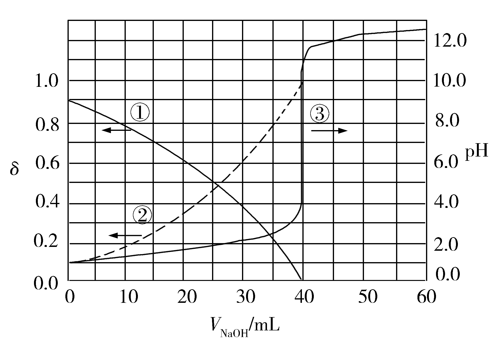
下列叙述正确的是（ ）
A. 曲线①代表δ(H₂A)，曲线②代表δ(HA⁻)
B. H2A溶液的浓度为0.2000 mol·L−1
C.
HA−的电离常数Ka=1.0×10−2
D. 滴定终点时，溶液中c(Na⁺)<2c(A²⁻)+c(HA⁻)
查看原题图／原始配图
所用高中知识
分布系数、逐级电离常数、滴定计量和电荷守恒。
读题与思路
低pH时H₂A第一步已强烈电离，曲线①主要HA⁻而②为A²⁻，A错。40 mL NaOH恰中和0.020 L二元酸，c=0.1000 mol/L而非0.2000。HA⁻与A²⁻分数相等处pH=2，故Ka₂=10⁻²，选C。终点呈碱性，电荷守恒给Na⁺大于2A²⁻+HA⁻。
分步解析
- 随加碱，下降曲线①代表HA−，上升曲线②代表A2−；题图显示第一步电离很强，H2A本身所占分数可忽略，A对应错误。
- 终点用NaOH 40.00 mL，n(OH−)=0.1000×0.04000=0.004000 mol，n(H2A)=0.002000 mol；c=0.002000/0.02000=0.1000 mol·L−1，B错误。
- 两分布曲线相交时δ(HA−)=δ(A2−)，即c(HA−)=c(A2−)，图示pH=2，故Ka2=c(H+)c(A2−)/c(HA−)=10−2，C正确。
- 酚酞终点显碱性。电荷守恒c(Na+)+c(H+)=2c(A2−)+c(HA−)+c(OH−)，因c(OH−)>c(H+)，应有c(Na+)>2c(A2−)+c(HA−)，D不成立。
检查与易错点
交点相等的是HA⁻与A²⁻，不是HA⁻与H⁺。浓度终点计算需考虑二元酸每mol消耗2 mol OH⁻。
本题来源：paper2020 · doc-paper
三、非选择题：共174分，第22~32题为必考题，每个试题考生都必须作答。第33~38题为选考题，考生根据要求作答。
(一)必考题：共129分。
相关题目：第 26 题 · 第 27 题 · 第 28 题 · 第 35 题 · 第 36 题
返回原卷说明与相对原子质量 返回非选择题说明
题目与已知条件
（14分）
钒具有广泛用途。黏土钒矿中，钒以+3、+4、+5价的化合物存在，还包括钾、镁的铝硅酸盐，以及SiO2、Fe3O4。采用以下工艺流程可由黏土钒矿制备NH4VO3。
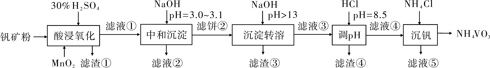
该工艺条件下，溶液中金属离子开始沉淀和完全沉淀的pH如下表所示：
| 金属离子 |
Fe3+ |
Fe2+ |
Al3+ |
Mn2+ |
| 开始沉淀pH |
1.9 |
7.0 |
3.0 |
8.1 |
| 完全沉淀pH |
3.2 |
9.0 |
4.7 |
10.1 |
回答下列问题：
(1)“酸浸氧化”需要加热，其原因是___________。
(2)“酸浸氧化”中，VO+和VO2+被氧化成VO₂⁺，同时还有___________离子被氧化。写出VO+转化为VO₂⁺反应的离子方程式___________。
(3)“中和沉淀”中，钒水解并沉淀为V₂O₅·xH₂O，随滤液②可除去金属离子K+、Mg2+、Na+、___________，以及部分的___________。
(4)“沉淀转溶”中，V₂O₅·xH₂O转化为钒酸盐溶解。滤渣③的主要成分是___________。
(5)“调pH”中有沉淀生成，生成沉淀反应的化学方程式是___________。
(6)“沉钒”中析出NH4VO3晶体时，需要加入过量NH4Cl，其原因是___________。
查看原题图／原始配图
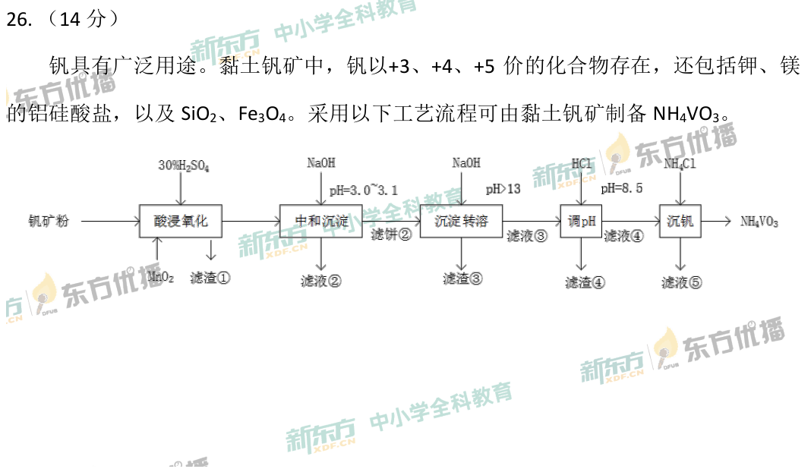
原始配图 1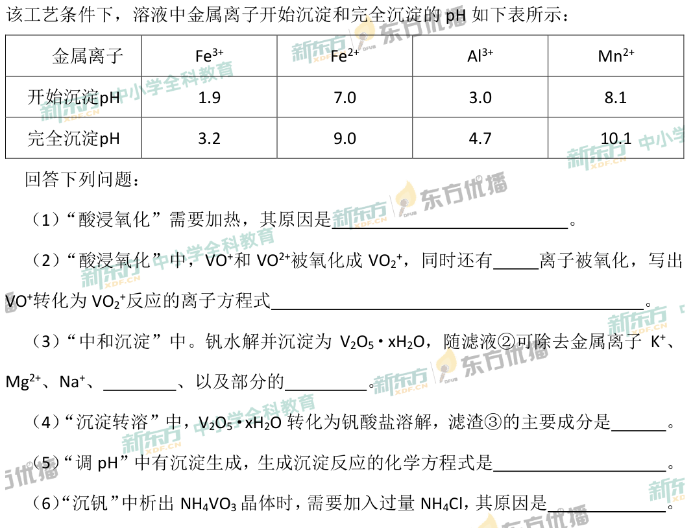
原始配图 2所用高中知识
不同价态氧钒离子、氧化还原、按pH分离、两性氢氧化物和同离子效应。
读题与思路
升温加快浸出氧化；VO⁺中V+3失2e，与MnO₂得2e配成VO⁺+MnO₂+2H⁺→VO₂⁺+Mn²⁺+H₂O；Fe₃O₄中的Fe²⁺也氧化。pH3.0–3.1时Mn²⁺未沉淀、Fe³⁺及Al³⁺尚未全沉。强碱溶钒/铝而留下Fe(OH)₃；再酸化铝酸盐析Al(OH)₃。过量NH₄Cl用同离子效应促NH₄VO₃析晶。
分步解析
- （1）加热主要是加快酸浸和氧化反应，提高浸出、转化速率，使矿物处理较充分。不能将“温度升高必使所有氧化剂氧化性增强”当普遍规律。
- （2）矿中Fe3O4含Fe(Ⅱ)，酸浸释放Fe2+也会被氧化。VO+中的V为+3，转VO2+为+5，失2e−；MnO2得2e−变Mn2+。配平：VO++MnO2+2H+→VO2++Mn2++H2O。
- （3）中和至pH 3.0—3.1，K+、Mg2+、Na+和Mn2+不沉淀而随滤液②除去；Fe3+到3.2才完全沉淀，Al3+从3.0开始沉淀，因此仍有部分Fe3+、Al3+进入滤液。
- （4）调强碱使水合V2O5转为钒酸盐，Al(OH)3也溶为铝酸盐；Fe(OH)3不溶于过量NaOH，故滤渣③主要为Fe(OH)3。
- （5）把强碱性滤液调至pH 8.5，铝重新沉淀：NaAlO2+HCl+H2O→Al(OH)3↓+NaCl。若用实际四羟基合铝酸根，则Al(OH)4−+H+→Al(OH)3↓+H2O，二者元素守恒一致。
- （6）NH4VO3(s)⇌NH4++VO3−。过量NH4Cl提高c(NH4+)，使沉淀溶解平衡左移，提高析出量与钒回收率。
答案
（1）加快酸浸氧化速率、提高浸出转化效率。（2）Fe²⁺；VO⁺+MnO₂+2H⁺→VO₂⁺+Mn²⁺+H₂O。（3）Mn²⁺；部分Al³⁺和Fe³⁺。（4）Fe(OH)₃。（5）NaAlO₂+HCl+H₂O ══ NaCl+Al(OH)₃↓（或Na[Al(OH)₄]+HCl ══ Al(OH)₃↓+NaCl+H₂O）。（6）利用同离子效应，增大c(NH₄⁺)，促使NH₄VO₃尽可能完全析出。
检查与易错点
VO⁺、VO²⁺与VO₂⁺是三种不同离子，分别为V(Ⅲ)、V(Ⅳ)、V(Ⅴ)，不能漏下标或用电荷替代下标。氧化式电荷左+3、右+3，O与H均守恒。
本题来源：paper2020 · doc-paper
返回原卷说明与相对原子质量 返回非选择题说明
题目与已知条件
（15分）
为验证不同化合价铁的氧化还原能力，利用下列电池装置进行实验。
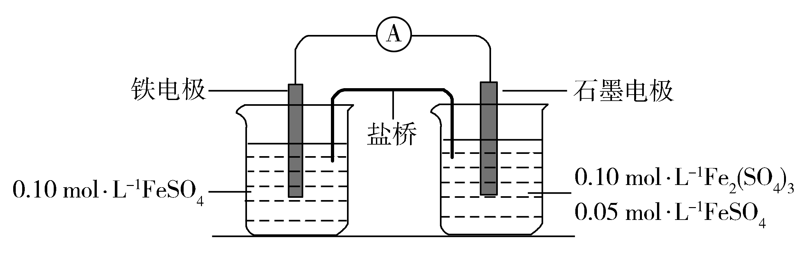
回答下列问题：
(1)由FeSO4·7H2O固体配制0.10 mol·L−1
FeSO4溶液，需要的仪器有药匙、玻璃棒、_________(从下列图中选择，写出名称)。
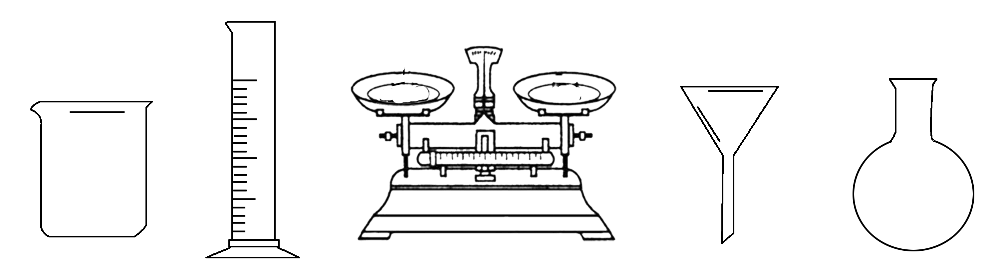
(2)电池装置中，盐桥连接两电极电解质溶液。盐桥中阴、阳离子不与溶液中的物质发生化学反应，并且电迁移率(u∞)应尽可能地相近。根据下表数据，盐桥中应选择____________作为电解质。
| 阳离子 |
u∞×108/(m2·s−1·V−1) |
阴离子 |
u∞×108/(m2·s−1·V−1) |
| Li+ |
4.07 |
HCO₃⁻ |
4.61 |
| Na+ |
5.19 |
NO₃⁻ |
7.40 |
| Ca2+ |
6.59 |
Cl− |
7.91 |
| K+ |
7.62 |
SO₄²⁻ |
8.27 |
(3)电流表显示电子由铁电极流向石墨电极。可知，盐桥中的阳离子进入________电极溶液中。
(4)电池反应一段时间后，测得铁电极溶液中c(Fe2+)增加了0.02
mol·L−1。石墨电极上未见Fe析出。可知，石墨电极溶液中c(Fe2+)=________。
(5)根据(3)、(4)实验结果，可知石墨电极的电极反应式为_______，铁电极的电极反应式为_______。因此，验证了Fe2+氧化性小于________，还原性小于________。
(6)实验前需要对铁电极表面活化。在FeSO4溶液中加入几滴Fe2(SO4)3溶液，将铁电极浸泡一段时间，铁电极表面被刻蚀活化。检验活化反应完成的方法是_______。
查看原题图／原始配图
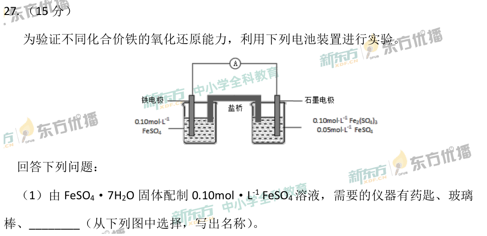
原始配图 1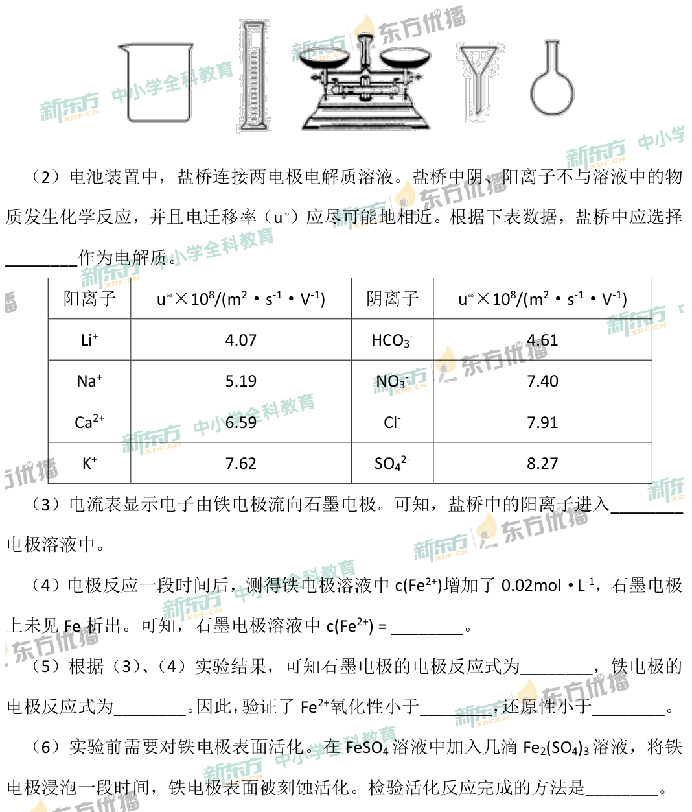
原始配图 2所用高中知识
溶液配制仪器、盐桥、电荷平衡、电子守恒、Fe³⁺检验。
读题与思路
图选配液器具为天平、烧杯、量筒；盐桥KCl迁移率接近且不引入氧化性硝酸根。电子由Fe到石墨，Fe→Fe²⁺+2e，石墨Fe³⁺+e→Fe²⁺，阳离子进石墨侧。若两侧体积相等，浓度增量比2:1，石墨为0.05+0.04=0.09；一般式为0.05+0.04V铁/V石墨，原题未单列体积条件。活化后取液加KSCN无红色说明Fe³⁺已耗尽。
分步解析
- （1）在给出的仪器图中选烧杯、量筒、托盘天平；漏斗和圆底烧瓶不是该粗配操作需要的仪器。药匙、玻璃棒已给出。若要求严格配制定容浓度，还需容量瓶等，但不把未给仪器冒作该题图选项。
- （2）盐桥既不能与溶液组分反应，又需阴阳离子迁移率接近。K+7.62与Cl−7.91相近，可选KCl；NO3−虽与K+更接近，但酸性条件下可能氧化Fe2+，不选。
- （3）电子由Fe流向石墨，Fe是负极、石墨是正极。正极Fe3+得电子变Fe2+，溶液正电荷减少，盐桥阳离子进入石墨电极侧维持电中性。
- （4）按图中两侧等体积溶液的命题约定，且忽略反应前后体积变化。Fe侧c(Fe2+)增加0.02 mol·L−1，每mol Fe失2e−；石墨侧每mol Fe3+得1e−，故Fe2+增量为0.04 mol·L−1，总浓度0.05+0.04=0.09 mol·L−1。
- （5）石墨极Fe3++e−→Fe2+；铁极Fe→Fe2++2e−。Fe3+先被还原而未析Fe，表明Fe2+氧化性小于Fe3+；Fe单质被氧化而Fe2+未继续氧化，表明其还原性小于Fe。
- （6）活化反应Fe+2Fe3+→3Fe2+完成后Fe3+应耗尽。取少量浸泡液于洁净试管，滴加KSCN溶液，未出现红色即可按题定性判据判断反应完成。
答案
（1）烧杯、量筒、托盘天平。（2）KCl。（3）石墨。（4）0.09 mol·L⁻¹（两侧溶液等体积）。（5）Fe³⁺+e⁻→Fe²⁺；Fe−2e⁻→Fe²⁺；Fe³⁺；Fe。（6）取少量浸泡液，滴入KSCN溶液，不出现血红色，说明活化反应已完成。
检查与易错点
检验应取少量溶液，不把检验试剂直接加入正在研究的整套电池。原题文字未另给体积，0.09采用示意图两侧等体积的通常解题约定；若不接受这一约定，通式为c(Fe²⁺)石墨侧=0.05+0.04V铁侧/V石墨侧（mol·L⁻¹），不能仅凭电子守恒唯一给出0.09。
本题来源：paper2020 · doc-paper
返回原卷说明与相对原子质量 返回非选择题说明
题目与已知条件
（14分）硫酸是一种重要的基本化工产品，接触法制硫酸生产中的关键工序是SO2的催化氧化：SO2(g)+½O2(g) ⇌ SO3(g)（钒催化剂），ΔH=−98 kJ·mol−1。回答下列问题：
(1)钒催化剂参与反应的能量变化如图所示，V2O5(s)与SO2(g)反应生成VOSO4(s)和V2O4(s)的热化学方程式为：_________。
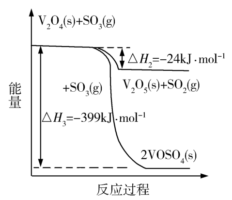
(2)当SO2(g)、O2(g)和N2(g)起始的物质的量分数分别为7.5%、10.5%和82%时，在0.5MPa、2.5MPa和5.0MPa压强下，SO2平衡转化率α随温度的变化如图所示。反应在5.0MPa、550℃时的α=__________，判断的依据是__________。影响α的因素有__________。
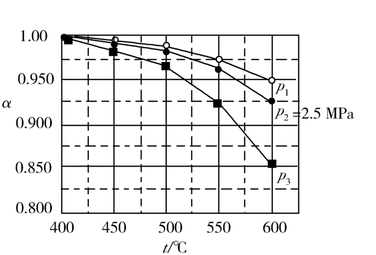
(3)将组成(物质的量分数)为2m% SO2(g)、m% O2(g)和q% N2(g)的气体通入反应器，在温度t、压强p条件下进行反应。平衡时，若SO2转化率为α，则SO3压强为___________，平衡常数Kp=___________(以分压表示，分压=总压×物质的量分数)。
（4）研究表明，SO2催化氧化的反应速率方程为：v=k(α/α′−1)0.8(1−nα′)。式中：k为反应速率常数，随温度t升高而增大；α为SO2平衡转化率，α′为某时刻SO2转化率，n为常数。在α′=0.90时，将一系列温度下的k、α值代入上述速率方程，得到v—t曲线，如图所示。
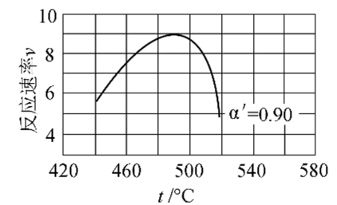
曲线上v最大值所对应温度称为该α'下反应的最适宜温度tm。t<tm时，v逐渐提高；t>tm后，v逐渐下降。原因是__________________________。
查看原题图／原始配图
原始配图 1原始配图 2原始配图 3
所用高中知识
盖斯定律、气体平衡分压、压力和温度效应、最适温度。
读题与思路
盖斯组合第三个热化学过程−2×第二个热化学过程得到2V₂O₅+2SO₂→2VOSO₄+V₂O₄，ΔH=−399+48=−351 kJ/mol。气体总计量数减少，最高压对应最上曲线，550 ℃读α=0.975。取初始100 mol，平衡总量D=3m−mα+q；pSO₃=2mαp/D；Kp=α/[(1−α)√(m(1−α)p/D)]。固定α′下升温使k增而α减，前段动力学加速占优，后段平衡推动力降低占优。
分步解析
- （1）图中可得V2O4+2SO3→2VOSO4，ΔH3=−399 kJ·mol−1；V2O4+SO3→V2O5+SO2，ΔH2=−24 kJ·mol−1。第三个热化学过程−2×第二个热化学过程得2V2O5(s)+2SO2(g)→2VOSO4(s)+V2O4(s)，ΔH=−399−2(−24)=−351 kJ·mol−1。
- （2）SO2+½O2⇌SO3气体计量数减少，同温度增压使平衡右移；所以5.0 MPa对应上方p1曲线，550 ℃时α=0.975。影响α的有温度、总压强和起始组成。
- （3）取初始总量100 mol：SO2为2m、O2为m、N2为q。平衡时依次为2m(1−α)、m(1−α)、q，并生成SO3 2mα，总量D=3m−mα+q。故p(SO3)=2mαp/D。
- 相应p(SO2)=2m(1−α)p/D，p(O2)=m(1−α)p/D。对题给一份SO2的方程，Kp=p(SO3)/[p(SO2)√p(O2)]=α/[(1−α)√(m(1−α)p/D)]。
- （4）固定α′=0.90时，(1−nα′)固定。升温使k增大，同时放热反应的α减小，使(α/α′−1)0.8变小。t<tm时k增大效应占主导，速率上升；t>tm时平衡推动力减小效应占主导，速率下降。
答案
（1）2V₂O₅(s)+2SO₂(g) ══ 2VOSO₄(s)+V₂O₄(s) ΔH=−351 kJ·mol⁻¹。（2）0.975；该反应气体分子数减少，增大压强α提高，5.0 MPa对应最上方曲线p₁；温度、压强和反应物的起始组成。（3）p(SO₃)=2mαp/(100−mα)；Kp=α/[(1−α)^1.5·(mp/(100−mα))^0.5]。（4）升高温度，k增大使v提高，但α减小使v降低；ttm后α减小的影响占主导。
检查与易错点
Kp表达式必须与题给SO₂+½O₂⇌SO₃一致；若方程整体乘2，Kp应平方。不要把随温度升高而增大的速率常数k误写成放热反应的平衡常数K。
速率式的0.8是前一括号的指数；后一因子（1−nα′）另相乘。能量图中ΔH₃=−399 kJ·mol⁻¹、ΔH₂=−24 kJ·mol⁻¹，读图时注意符号。
本题来源：paper2020 · doc-paper
(二)选考题：共45分。请考生从2道物理题、2道化学题、2道生物题中每科任选一题作答。如果多做，则每科按所做的第一题计分。
相关题目：第 35 题 · 第 36 题
返回原卷说明与相对原子质量 返回非选择题说明 返回选考题说明
题目与已知条件
（15分）Goodenough等人因在锂离子电池及钴酸锂、磷酸铁锂等正极材料研究方面的卓越贡献而获得2019年诺贝尔化学奖。回答下列问题：
（1）基态Fe2+与Fe3+离子中未成对的电子数之比为________。
（2）Li及其周期表中相邻元素的第一电离能（I₁）如表所示。I₁(Li)>I₁(Na)，原因是________。I₁(Be)>I₁(B)>I₁(Li)，原因是________。
I₁/kJ·mol−1| Li | Be | B |
|---|
| 520 | 900 | 801 |
| Na | Mg | Al |
|---|
| 496 | 738 | 578 |
（3）磷酸根离子的空间构型为________，其中P的价层电子对数为________、杂化轨道类型为________。
（4）LiFePO4的晶胞结构示意图如(a)所示。其中O围绕Fe和P分别形成正八面体和正四面体，它们通过共顶点、共棱形成空间链结构。每个晶胞中含有LiFePO4的单元数有________个。
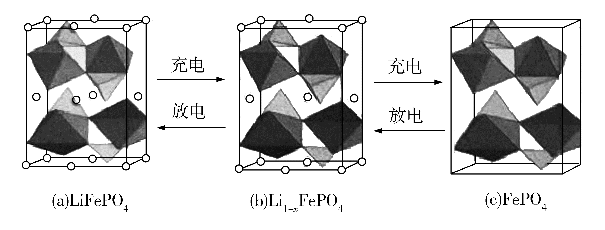
电池充电时，LiFePO4脱出部分Li+，形成Li1−xFePO4，结构示意图如(b)所示，则x=________，n(Fe2+)∶n(Fe3+)=________。
查看原题图／原始配图
原始配图 1
所用高中知识
d电子排布、第一电离能、四面体阴离子、晶胞均摊及电荷守恒。
读题与思路
自由Fe²⁺3d⁶有4未成对、Fe³⁺3d⁵有5未成对。Na比Li价电子更远，Be的2s²全满比B的2p¹难移除。PO₄³⁻价层电子对4，正四面体sp³。晶胞Li=8/8+4/4+4/2=4；b比a少一棱Li和一面Li，共3/4个，所以x=(3/4)/4=3/16。每脱一个Li⁺需一个Fe²⁺氧化，Fe²⁺:Fe³⁺=13:3。
分步解析
- （1）Fe2+为[Ar]3d⁶，五个d轨道中4个未成对；Fe3+为[Ar]3d⁵，有5个未成对，故比为4∶5。
- （2）Na比Li多一个电子层，价电子离核更远、屏蔽更强，较易移除，I₁(Li)>I₁(Na)。同周期总体核吸引增强，B的I₁高于Li；Be为2s²全满亚层，B的被移除电子位于较高能的2p，故Be高于B。
- （3）PO43−的P有4对价层电子对、无孤电子对，空间构型正四面体，采用高中模型sp³杂化。
- （4）原晶胞Li均摊：8×⅛+4×¼+4×½=4，对应4个LiFePO4单元。图b比图a少一个棱上和一个面上Li，实际少¼+½=¾个，剩13/4个。按每胞4个P归一，1−x=(13/4)/4=13/16，所以x=3/16。
- Li1−xFePO4中PO43−固定，Li贡献1−x价，Fe平均价需为2+x。若Fe3+份额为f，则2(1−f)+3f=2+f=2+x，f=x=3/16；Fe2+∶Fe3+=13∶3。
答案
（1）4∶5。（2）Na与Li同主族，Na电子层数多、原子半径大，更易失去电子；Li、Be、B同周期，核电荷数依次增大，B的I₁大于Li，而Be的2s²为全满稳定结构，B失去的是能量较高的2p电子，故I₁(Be)>I₁(B)。（3）正四面体；4；sp³。（4）4；3/16；13∶3。
检查与易错点
充电正极脱出Li⁺的同时Fe²⁺被氧化；Li⁺并不是在这一晶格中“得到电子脱出”。此处电子守恒由每脱1 mol Li⁺对应Fe²⁺失1 mol电子建立。
本题来源：paper2020 · doc-paper
返回原卷说明与相对原子质量 返回非选择题说明 返回选考题说明
题目与已知条件
（15分）
[化学——选修5：有机化学基础]
有机碱，例如二甲基胺( )、苯胺(
)、苯胺(![2020年化学第36题题设图（源文件独立图形2）]() )，吡啶(
)，吡啶(![2020年化学第36题题设图（源文件独立图形3）]() )等，在有机合成中应用很普遍，目前“有机超强碱”的研究越来越受到关注，以下为有机超强碱F的合成路线：
)等，在有机合成中应用很普遍，目前“有机超强碱”的研究越来越受到关注，以下为有机超强碱F的合成路线：
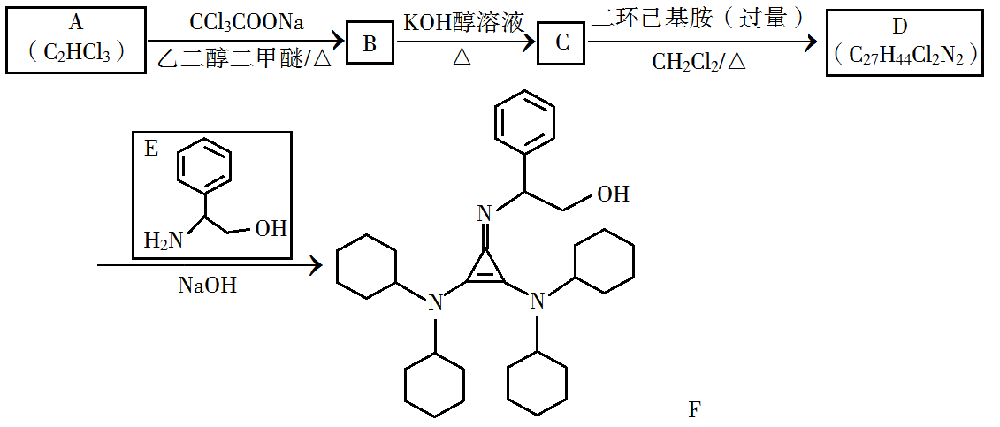
已知如下信息：
①H2C=CH2![2020年化学第36题题设图（源文件独立图形5）]()
②![2020年化学第36题题设图（源文件独立图形6）]() +RNH2
+RNH2![2020年化学第36题题设图（源文件独立图形7）]()
③苯胺与甲基吡啶互为芳香同分异构体
回答下列问题：
(1)A的化学名称为________。
(2)由B生成C的化学方程式为________。
(3)C中所含官能团的名称为________。
(4)由C生成D的反应类型为________。
(5)D结构简式为________。
(6)E的六元环芳香同分异构体中，能与金属钠反应，且核磁共振氢谱有四组峰，峰面积之比为6∶2∶2∶1的有________种，其中，芳香环上为二取代的结构简式为________。
查看原题图／原始配图
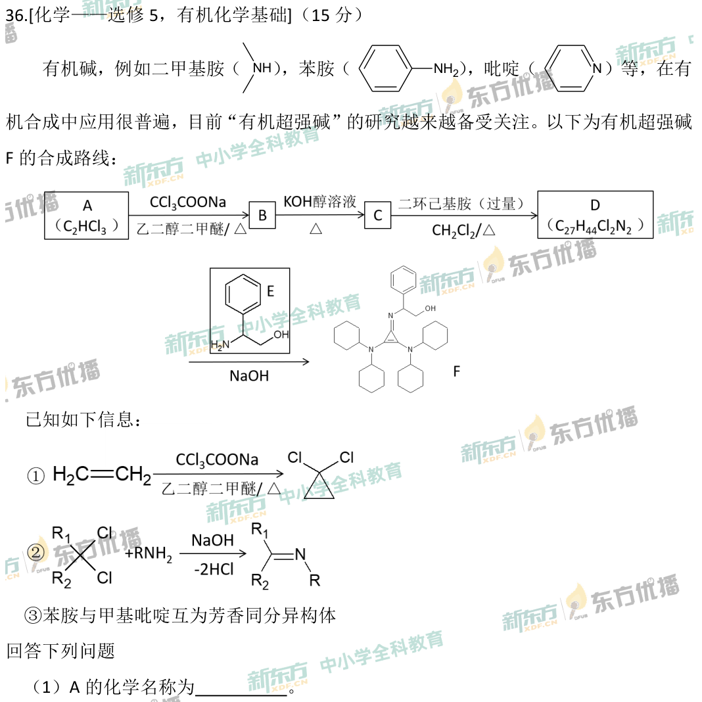
原始配图 1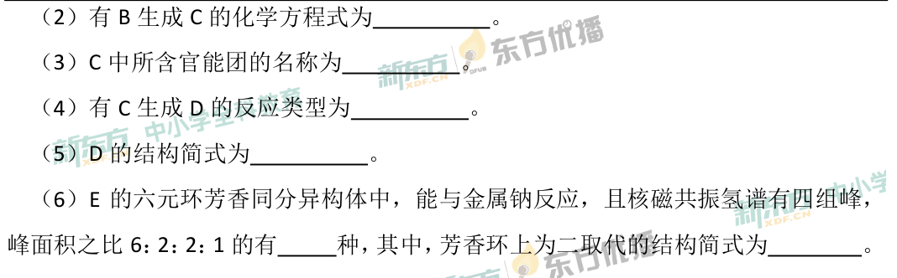
原始配图 2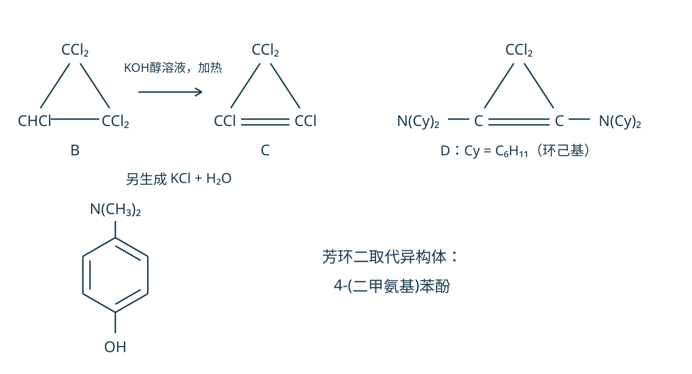
修订前解析配图 3所用高中知识
二氯卡宾式信息迁移、消去与取代、胺和醇、芳香异构体与等效氢。
读题与思路
A=CHCl=CCl₂，三氯乙烯；由信息①引入CCl₂成C₃HCl₅三元环B，醇KOH消去1HCl成C₃Cl₄环丙烯C。双键两端Cl被两个N(C₆H₁₁)₂取代，顶点仍CCl₂，D计C₂₇H₄₄Cl₂N₂吻合。E为C₈H₁₁NO，要求6:2:2:1氢分组及可与Na反应。苯环3种（对二甲氨基苯酚及两种对氨基对称二甲基苯酚），吡啶环3种（4位C(OH)(CH₃)₂及2,6/3,5二甲基4-羟甲基吡啶），共6种；芳环二取代者为对二甲氨基苯酚。
分步解析
- （1）A为C2HCl3，与题给加成形式相符的结构CHCl=CCl2，名称三氯乙烯。
- （2）信息①使烯烃引入一个CCl2形成三元环，B为C3HCl5，三顶点依次为CCl2、CHCl、CCl2。与醇溶KOH加热消去一分子HCl，生成C3Cl4：B+KOH→C+KCl+H2O，三元环底边变为C=C；结构方程见图。
- （3）C含碳碳双键和氯原子。（4）C与过量二环己基胺反应，以—N(C6H11)2取代双键碳上的两个Cl，属取代反应。
- （5）D为顶点CCl2、双键两端各连N(C6H11)2的环丙烯，结构见图。式量计数为C3+4C6H11+N2Cl2=C27H44Cl2N2，与题给分子式相符。
- （6）E=C6H5CH(NH2)CH2OH，式为C8H11NO。四组峰6∶2∶2∶1意味着有两个等效CH3，并且整体须高度对称。含苯环的3种：4-(二甲氨基)苯酚；4-氨基-2,6-二甲基苯酚；4-氨基-3,5-二甲基苯酚。后二者的6H来自两个甲基，两个2H分别来自环H、NH2，1H为OH。
- 另有含吡啶六元芳环的3种：2-(吡啶-4-基)丙-2-醇〔4位连C(OH)(CH3)2〕；(2,6-二甲基吡啶-4-基)甲醇；(3,5-二甲基吡啶-4-基)甲醇。前者环H为两组各2H，后两者环H2H与CH22H各成一组；均有OH可与Na反应。合计6种，其中芳环二取代结构为对HO—C6H4—N(CH3)2。
答案
（1）三氯乙烯。（2）B（C₃HCl₅，三元环）+KOH →(醇，△) C（C₃Cl₄，四氯环丙烯）+KCl+H₂O。（3）碳碳双键、氯原子。（4）取代反应。（5）D为环丙烯：顶点碳为CCl₂，双键两端碳各连一个—N(C₆H₁₁)₂（C₂₇H₄₄Cl₂N₂）。（6）6种；芳环二取代者为4-(二甲氨基)苯酚。
检查与易错点
“芳香同分异构体”允许吡啶型含N芳环，不能只列苯环。每个所列异构体都要核C₈H₁₁NO、四组等效氢和可与Na反应的OH。
本题来源：paper2020 · doc-paper
题源与核验说明
- 2020.html旧版解析文件；SHA-256：38f101cf9aa8c8abc3e0460a3e4d0d90ba593df38c06327d6824e3ea01cb08ab
- 2020年高考真题——理科综合（全国卷Ⅰ） Word版含解析【KS5U 高考】.doc原卷文件；SHA-256：fe7988c1fd1e51495fa1d73ccd6fc9a74398addfd39c398aa99cde9b79fac13f
- 北京新东方：2020全国乙卷（全国Ⅰ卷）理综化学逐题解析同卷题面或参考资料的公开来源；参考答案仅作对照，解析按题设给出推导。